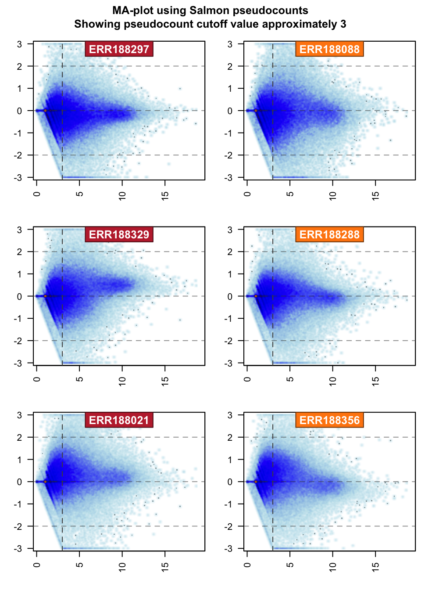
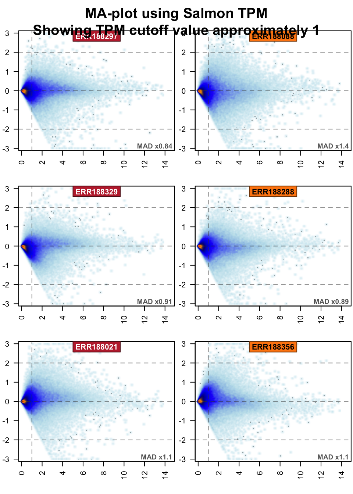

vignettes/basic-rnaseq-workflow.Rmd
basic-rnaseq-workflow.RmdThis vignette is intended to demonstrate the basic analysis workflow for RNA-seq data.
First, set up the R environment with basic packages loaded.
suppressPackageStartupMessages(library(splicejam));
suppressPackageStartupMessages(library(colorjam));
suppressPackageStartupMessages(library(jamba));
suppressPackageStartupMessages(library(jamma));This example begins with Salmon quantification files from the tximportData package.
suppressPackageStartupMessages(library(tximportData));
dir <- system.file("extdata", package="tximportData");
# read sample annotations as a data.frame
samples <- read.table(file.path(dir, "samples.txt"), header=TRUE);
samples;
#> pop center assay sample experiment run
#> 1 TSI UNIGE NA20503.1.M_111124_5 ERS185497 ERX163094 ERR188297
#> 2 TSI UNIGE NA20504.1.M_111124_7 ERS185242 ERX162972 ERR188088
#> 3 TSI UNIGE NA20505.1.M_111124_6 ERS185048 ERX163009 ERR188329
#> 4 TSI UNIGE NA20507.1.M_111124_7 ERS185412 ERX163158 ERR188288
#> 5 TSI UNIGE NA20508.1.M_111124_2 ERS185362 ERX163159 ERR188021
#> 6 TSI UNIGE NA20514.1.M_111124_4 ERS185217 ERX163062 ERR188356
# define Salmon import files
files <- jamba::nameVector(file.path(dir, "salmon", samples$run, "quant.sf.gz"),
samples$run);
data.frame(files);
#> files
#> ERR188297 /Users/wardjm/Library/R/3.5/library/tximportData/extdata/salmon/ERR188297/quant.sf.gz
#> ERR188088 /Users/wardjm/Library/R/3.5/library/tximportData/extdata/salmon/ERR188088/quant.sf.gz
#> ERR188329 /Users/wardjm/Library/R/3.5/library/tximportData/extdata/salmon/ERR188329/quant.sf.gz
#> ERR188288 /Users/wardjm/Library/R/3.5/library/tximportData/extdata/salmon/ERR188288/quant.sf.gz
#> ERR188021 /Users/wardjm/Library/R/3.5/library/tximportData/extdata/salmon/ERR188021/quant.sf.gz
#> ERR188356 /Users/wardjm/Library/R/3.5/library/tximportData/extdata/salmon/ERR188356/quant.sf.gzThe transcript-to-gene association will be stored in a data.frame tx2geneDF, in this case using splicejam::makeTx2geneFromGtf(). For other ways of creating a tx2gene data.frame, see the vignette from the tximport::tximport package.
For the purpose of this example, the GTF file is used from the tximportData package.
gtfFile <- head(
list.files(pattern="gtf.gz",
path=system.file("extdata/salmon_dm", package="tximportData"),
full.names=TRUE),
1);
gtfFile;
#> [1] "/Users/wardjm/Library/R/3.5/library/tximportData/extdata/salmon_dm/Drosophila_melanogaster.BDGP6.92.gtf.gz"
tx2geneDF <- makeTx2geneFromGtf(GTF=gtfFile);
#> Warning: package 'data.table' was built under R version 3.5.2
#> Warning in data.table::fread(GTF, sep = "\t", autostart = 20, nrows =
#> nrows, : 'autostart' is now deprecated and ignored. Consider skip='string'
#> or skip=n
#> Warning in data.table::fread(GTF, sep = "\t", autostart = 20, nrows =
#> nrows, : Detected 1 column names but the data has 9 columns (i.e. invalid
#> file). Added 8 extra default column names at the end.
txColname <- "transcript_id";
geneColname <- "gene_name";
print(head(tx2geneDF));
#> gene_id gene_name transcript_id
#> 1 FBgn0000003 7SLRNA:CR32864 FBtr0081624
#> 2 FBgn0000008 a FBtr0100521
#> 3 FBgn0000008 a FBtr0071763
#> 4 FBgn0000008 a FBtr0342981
#> 5 FBgn0000008 a FBtr0071764
#> 6 FBgn0000014 abd-A FBtr0306337
## Alternatively, we load a prepared file from tximportData
tx2geneDF <- data.table::fread(
file.path(dir, "tx2gene.gencode.v27.csv"),
sep=",",
data.table=FALSE);
txColname <- colnames(tx2geneDF)[1];
geneColname <- colnames(tx2geneDF)[2];txiTx <- tximport::tximport(files,
type="salmon",
txOut=TRUE);
#> reading in files with read_tsv
#> 1 2 3 4 5 6
## Check the data returned
jamba::sdim(txiTx);
#> rows cols class
#> abundance 200401 6 matrix
#> counts 200401 6 matrix
#> length 200401 6 matrix
#> countsFromAbundance 1 characterIt is helpful and consistent with other Bioconductor workflows to use a commonly-used object “SummarizedExperiment”. This object stores gene data, biological sample data, and one or more data matrices in one convenient format.
Note: During this step, data is log2-transformed using the format
log2(1+x).
## Create SummarizedExperiment transcript object
if (!"package:SummarizedExperiment" %in% search()) {
suppressPackageStartupMessages(library(SummarizedExperiment));
}
#> Warning: package 'BiocParallel' was built under R version 3.5.2
assayNames <- intersect(c("abundance","counts"), names(txiTx));
geneMatch <- match(rownames(txiTx[[assayNames[1]]]),
tx2geneDF[,txColname]);
sampleDF <- data.frame(Sample=colnames(txiTx[[assayNames[1]]]),
Group=rep(c("A", "B"), length.out=ncol(txiTx[[assayNames[1]]])));
TxSE <- SummarizedExperiment(
assays=lapply(txiTx[assayNames], function(x){log2(1+x)}),
rowData=DataFrame(tx2geneDF[geneMatch,,drop=FALSE]),
colData=DataFrame(sampleDF)
)If data was imported at the transcript level (above) then it can be summarized at the gene level without re-importing from the source files. Alternatively, it can be imported from source files without importing at the transcript level. Both methods are shown below.
##
if (exists("txiTx")) {
txiGene <- tximport::summarizeToGene(txiTx,
tx2gene=tx2geneDF[,c(txColname,geneColname)]);
} else {
txiGene <- tximport::tximport(unname(files),
type="salmon",
tx2gene=tx2geneDF[,c(txColname,geneColname)]);
}
#> summarizing abundance
#> summarizing counts
#> summarizing length
## Check the data returned
jamba::sdim(txiGene);
#> rows cols class
#> abundance 58288 6 matrix
#> counts 58288 6 matrix
#> length 58288 6 matrix
#> countsFromAbundance 1 characterIt is helpful and consistent with other Bioconductor workflows to use a commonly-used object “SummarizedExperiment”. This object stores gene data, biological sample data, and one or more data matrices in one convenient format.
Note: This step is a convenient time to annotate the gene data.frame, for example the steps below will use gene-related
colnames(tx2geneDF)where possible. If a “gene_name” or “gene_symbol” colname does not exist, this step would be a good time to add that data.
Note: During this step, data is log2-transformed using the format
log2(1+x).
## Create SummarizedExperiment transcript object
assayNamesG <- intersect(c("abundance","counts"), names(txiGene));
geneMatchG <- match(rownames(txiGene[[assayNames[1]]]),
tx2geneDF[,geneColname]);
geneColnames <- unique(c(geneColname,
jamba::unvigrep("^trans|^tx", colnames(tx2geneDF))));
sampleDF <- data.frame(Sample=colnames(txiGene[[assayNames[1]]]),
Group=rep(c("A", "B"), length.out=ncol(txiGene[[assayNames[1]]])));
GeneSE <- SummarizedExperiment(
assays=lapply(txiGene[assayNamesG], function(x){log2(1+x)}),
rowData=DataFrame(tx2geneDF[geneMatchG,geneColnames,drop=FALSE]),
colData=DataFrame(sampleDF)
)Often the RNA-seq data includes a number of transcripts for which there is no detectable signal. Several filtering methods are encapsulated into a function defineDetectedTx() to filter transcript isoform data which should be considered below the effective limit of detection.
At this step, group mean values are used for filtering, however it can be performed without grouping, by setting groups=colnames(TxSE).
cutoffTxExpr <- 7;
cutoffTxTPMExpr <- 1;
cutoffTxPctMax <- 10;
detectedTxTPML <- defineDetectedTx(
iMatrixTx=assays(TxSE)[["counts"]],
iMatrixTxTPM=assays(TxSE)[["abundance"]],
groups=nameVector(colData(TxSE)$Group, colnames(TxSE)),
cutoffTxPctMax=cutoffTxPctMax,
cutoffTxExpr=cutoffTxExpr,
cutoffTxTPMExpr=cutoffTxTPMExpr,
tx2geneDF=renameColumn(rowData(TxSE),
from=c(geneColname,txColname),
to=c("gene_name","transcript_id")),
useMedian=FALSE,
verbose=FALSE);
detectedTx <- detectedTxTPML$detectedTx;
numDetectedTx <- length(detectedTx);
detectedGenes <- mixedSort(unique(rowData(TxSE[detectedTx,])[,geneColname]));
numDetectedGenes <- length(detectedGenes);
printDebug("Defined ",
format(big.mark=",", numDetectedTx),
" detected Tx representing ",
format(big.mark=",", numDetectedGenes),
" genes.");
#> Warning: package 'colorspace' was built under R version 3.5.2
#> ## (17:14:13) 06Feb2019: Defined 39,111 detected Tx representing 15,168 genes.Some of the cutoff values can be visualized by plotting the TPM versus the pseudocounts, shown below.
## For this plot, filter out all rows where TPM and abundance are zero.
iWhich <- (assays(TxSE[,1])[["counts"]] > 0 &
assays(TxSE[,1])[["abundance"]] > 0);
par("mfrow"=c(1,1), "mar"=c(5,4,4,2), "oma"=c(0,0,0,0));
plotSmoothScatter(x=log2(1+assays(TxSE[iWhich,1])[["counts"]]),
y=log2(1+assays(TxSE[iWhich,1])[["abundance"]]),
xlab="counts",
ylab="abundance",
xaxt="n",
yaxt="n");
#> Warning in NSBS(i, x, exact = exact, strict.upper.bound = !allow.append, :
#> subscript is an array, passing it thru as.vector() first
#> Warning in NSBS(i, x, exact = exact, strict.upper.bound = !allow.append, :
#> subscript is an array, passing it thru as.vector() first
jamba::minorLogTicksAxis(1,
logBase=2, displayBase=10, offset=1);
#> ## (17:14:13) 06Feb2019: adjusting logBase to displayBase.
#> Warning in any(majorLabels): coercing argument of type 'double' to logical
#> ## (17:14:13) 06Feb2019: majorTicks:-3.459432,-1.000000,0.000000,1.000000,3.459432,6.658211
#> ## (17:14:13) 06Feb2019: majorLabels:-10,-1,0,1,10,100
jamba::minorLogTicksAxis(2,
logBase=2, displayBase=10, offset=1);
#> ## (17:14:13) 06Feb2019: adjusting logBase to displayBase.
#> Warning in any(majorLabels): coercing argument of type 'double' to logical
#> ## (17:14:14) 06Feb2019: majorTicks:-3.459432,-1.000000,0.000000,1.000000,3.459432,6.658211
#> ## (17:14:14) 06Feb2019: majorLabels:-10,-1,0,1,10,100
abline(v=log2(1+cutoffTxExpr),
h=log2(1+cutoffTxTPMExpr),
lty="dashed",
col="red");Salmon pseudocounts versus TPM
Another method to determine suitable cutoff values is to create an MA-plot of the data, and look for the expression below which the variability becomes very high.
Typically, RNA-seq data abundances are affected by non-experimental factors such as total mapped reads, sample quality, sequence library efficiency, etc. Despite the fact that metrics such as FPKM and TPM are intended to reduce or remove the variability between samples, there are sometimes unavoidable differences which are apparently not biological in origin.
A full description of data normalization is beyond the scope of this document, however the recommended approach to review data is to use the jamma::jammaplot() MA-plot functions, as shown above.
The jammaplot R package is available on Github:
First show the pseudocount data:
if (!"package:jamma" %in% search()) {
suppressPackageStartupMessages(library(jamma));
}
par("oma"=c(0,0,3,0));
jamma::jammaplot(
noiseFloor(minimum=0.0001,
newValue=NA,
assays(TxSE)[["counts"]]),
transFactor=0.3,
ylim=c(-3,3),
ablineV=log2(1+cutoffTxExpr),
titleBoxColor=colorjam::group2colors(colData(TxSE)$Group),
groupSuffix="",
titleCexFactor=1.2,
useMean=TRUE);
#> Warning in rep(x, length.out = n): 'x' is NULL so the result will be NULL
#> Warning in rep(y, length.out = n): 'x' is NULL so the result will be NULL
#> Warning in text.default(x = textX[whichLabels], y = textY[whichLabels], :
#> "outer" is not a graphical parameter
#> Warning in rep(x, length.out = n): 'x' is NULL so the result will be NULL
#> Warning in rep(y, length.out = n): 'x' is NULL so the result will be NULL
#> Warning in text.default(x = textX[whichLabels], y = textY[whichLabels], :
#> "outer" is not a graphical parameter
#> Warning in rep(x, length.out = n): 'x' is NULL so the result will be NULL
#> Warning in rep(y, length.out = n): 'x' is NULL so the result will be NULL
#> Warning in text.default(x = textX[whichLabels], y = textY[whichLabels], :
#> "outer" is not a graphical parameter
#> Warning in rep(x, length.out = n): 'x' is NULL so the result will be NULL
#> Warning in rep(y, length.out = n): 'x' is NULL so the result will be NULL
#> Warning in text.default(x = textX[whichLabels], y = textY[whichLabels], :
#> "outer" is not a graphical parameter
#> Warning in rep(x, length.out = n): 'x' is NULL so the result will be NULL
#> Warning in rep(y, length.out = n): 'x' is NULL so the result will be NULL
#> Warning in text.default(x = textX[whichLabels], y = textY[whichLabels], :
#> "outer" is not a graphical parameter
#> Warning in rep(x, length.out = n): 'x' is NULL so the result will be NULL
#> Warning in rep(y, length.out = n): 'x' is NULL so the result will be NULL
#> Warning in text.default(x = textX[whichLabels], y = textY[whichLabels], :
#> "outer" is not a graphical parameter
title(outer=TRUE,
main=paste0("MA-plot using Salmon pseudocounts\n",
paste0("Showing pseudocount cutoff value approximately ",
log2(1+cutoffTxExpr))));
In the MA-plots above, one expects each sample to have roughly horizontal distribution, centered at y=0, which means the median transcript expression is roughly unchanged across all samples(y=0), and that the signal is roughly consistent from the low to high end of expression (horizontal).
Whenever a sample has bulk of its expression above (or below) y=0, it suggests there is overall higher (or lower) signal for all transcripts in that sample, which is counter to most assumptions of data normalization.
Next show the TPM data:
par("oma"=c(0,0,3,0));
jamma::jammaplot(
noiseFloor(minimum=0.0001,
newValue=NA,
assays(TxSE)[["abundance"]]),
transFactor=0.3,
ylim=c(-3,3),
ablineV=log2(1+cutoffTxTPMExpr),
titleBoxColor=colorjam::group2colors(colData(TxSE)$Group),
groupSuffix="",
displayMAD=TRUE,
titleCexFactor=1.2,
useMean=TRUE);
#> Warning in rep(x, length.out = n): 'x' is NULL so the result will be NULL
#> Warning in rep(y, length.out = n): 'x' is NULL so the result will be NULL
#> Warning in text.default(x = textX[whichLabels], y = textY[whichLabels], :
#> "outer" is not a graphical parameter
#> Warning in rep(x, length.out = n): 'x' is NULL so the result will be NULL
#> Warning in rep(y, length.out = n): 'x' is NULL so the result will be NULL
#> Warning in text.default(x = textX[whichLabels], y = textY[whichLabels], :
#> "outer" is not a graphical parameter
#> Warning in rep(x, length.out = n): 'x' is NULL so the result will be NULL
#> Warning in rep(y, length.out = n): 'x' is NULL so the result will be NULL
#> Warning in text.default(x = textX[whichLabels], y = textY[whichLabels], :
#> "outer" is not a graphical parameter
#> Warning in rep(x, length.out = n): 'x' is NULL so the result will be NULL
#> Warning in rep(y, length.out = n): 'x' is NULL so the result will be NULL
#> Warning in text.default(x = textX[whichLabels], y = textY[whichLabels], :
#> "outer" is not a graphical parameter
#> Warning in rep(x, length.out = n): 'x' is NULL so the result will be NULL
#> Warning in rep(y, length.out = n): 'x' is NULL so the result will be NULL
#> Warning in text.default(x = textX[whichLabels], y = textY[whichLabels], :
#> "outer" is not a graphical parameter
#> Warning in rep(x, length.out = n): 'x' is NULL so the result will be NULL
#> Warning in rep(y, length.out = n): 'x' is NULL so the result will be NULL
#> Warning in text.default(x = textX[whichLabels], y = textY[whichLabels], :
#> "outer" is not a graphical parameter
title(outer=TRUE,
main=paste0("MA-plot using Salmon TPM\n",
paste0("Showing TPM cutoff value approximately ",
log2(1+cutoffTxTPMExpr))));
The typical remedy for certain MA-plot patterns are summarized briefly below:
y=0, then no normalization is required.y=0, then median normalization is recommended.y=0 is substantially higher for some samples than the majority of all samples, these samples may be considered technical outliers. Use displayMAD on the jammaplot() to view the relative variability across samples. A MAD factor threshold of 2xMAD is typically enough to identify outliers among biological replicates, or threshold 5xMAD across all samples.Differential isoform analysis is carried out using the function splicejam::runDiffSplice(), which performs several convenient steps including the core function limma::diffSplice().
Before statistical comparisons can be performed, the design matrix and contrast matrix must be defined. The function groups2contrasts() makes it convenient to convert group names to a set of contrasts. The group names are assumed to have underscore “_" as a delimiter between factors, for example "Wildtype_Control" and "Mutant_Treated".
## Design matrix is defined by the sample groups
iSamples <- colnames(TxSE);
iGroups <- jamba::nameVector(
colData(TxSE[,iSamples])$Group,
iSamples);
## Use the function groups2contrasts()
iDC <- groups2contrasts(iGroups, returnDesign=TRUE);
iDesign <- iDC$iDesign;
iContrasts <- iDC$iContrasts;
printDebug("iDesign:");
#> ## (17:14:20) 06Feb2019: iDesign:
print(iDesign);
#> A B
#> ERR188297 1 0
#> ERR188088 0 1
#> ERR188329 1 0
#> ERR188288 0 1
#> ERR188021 1 0
#> ERR188356 0 1
printDebug("iContrasts:");
#> ## (17:14:20) 06Feb2019: iContrasts:
print(iContrasts);
#> Contrasts
#> Levels B-A
#> A -1
#> B 1
## Alternative method
if (1 == 2) {
iDesign <- stats::model.matrix(~0+iGroups);
colnames(iDesign) <- levels(iGroups);
rownames(iDesign) <- names(iGroups);
# Alternative format, useful for custom contrasts
iContrasts <- limma::makeContrasts(
contrasts=c(
"CA2_DE-CA2_CB",
"CA1_DE-CA1_CB"),
levels=iDesign);
}Note that it is important to keep the colnames(TxSE), design matrix, and contrast matrix in proper order. For this reason, iSamples is defined as colnames(TxSE), which should equal rownames(iDesign). Finally, colnames(iDesign) should equal rownames(iContrasts).
As a fun matrix math review, you can print the crossproduct of the design and contrast matrices to view the samples used in each contrast.
Given an expression data matrix, design matrix, and contrast matrix, splicejam::runDiffSplice() can be called. Note that all abundance values of zero are set to NA, so they do not contribute to the analysis.
iMatrixTxTPM <- assays(TxSE[,iSamples])[["abundance"]];
iMatrixTxTPM[iMatrixTxTPM == 0] <- NA;
diffSpliceL <- runDiffSplice(
iMatrixTx=iMatrixTxTPM,
detectedTx=detectedTx,
tx2geneDF=tx2geneDF,
txColname=txColname,
geneColname=geneColname,
iDesign=iDesign,
iContrasts=iContrasts,
cutoffFDR=0.05,
cutoffFold=1.5,
collapseByGene=TRUE,
spliceTest="t",
verbose=FALSE,
useVoom=FALSE);
#> Warning: Partial NA coefficients for 275 probe(s)
#> Total number of exons: 32645
#> Total number of genes: 8702
#> Number of genes with 1 exon: 0
#> Mean number of exons in a gene: 4
#> Max number of exons in a gene: 20
diffSpliceHitsL <- lapply(diffSpliceL$statsDFs, function(iDF){
hitColname <- head(vigrep("^hit ", colnames(iDF)), 1);
as.character(subset(iDF, iDF[[hitColname]] != 0)[,geneColname]);
});
printDebug("Differential isoform hits per contrast:");
#> ## (17:14:23) 06Feb2019: Differential isoform hits per contrast:
print(sdim(diffSpliceHitsL));
#> rows class
#> B-A 661 character